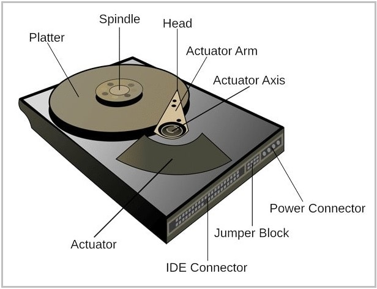
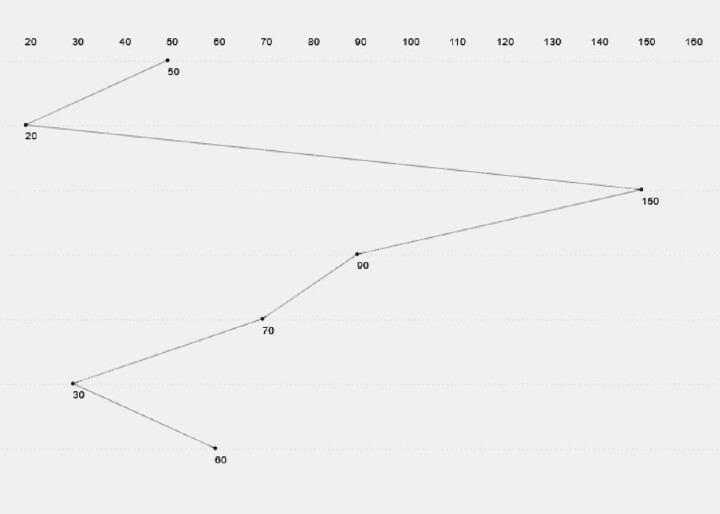
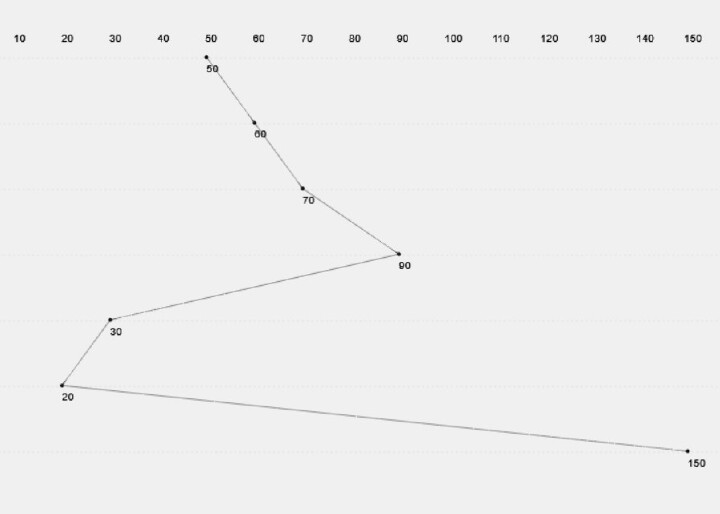
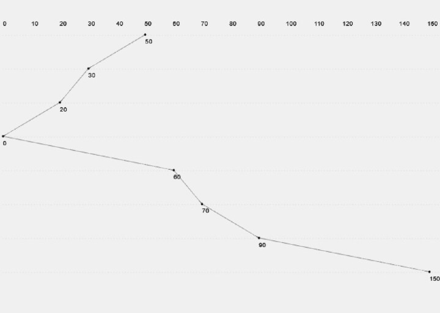
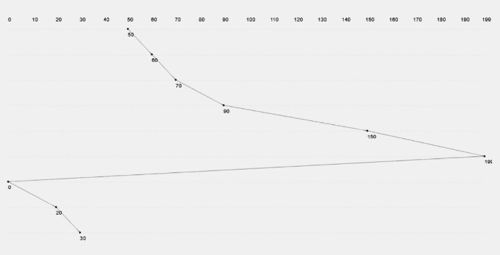
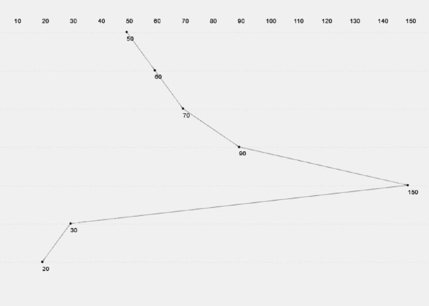
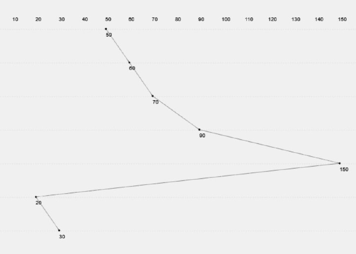

What is a Hard Disk?
A Hard Disk Drive (HDD) is a non-volatile storage device used to store operating systems, files, software, and other data permanently. It retains information even when the computer is powered off.
How It Works:
Inside the hard disk, there are spinning disks called platters. These are coated with a magnetic material. A read/write head moves across the platters to read or write data as the platters spin.
- Platter: Circular magnetic disk that holds the data.
- Spindle: Rotates the platter at high speed (e.g., 7200 RPM).
- Read/Write Head: Reads or writes data on the platter surface.
- Actuator Arm: Moves the head to the correct data track.
- Controller: Coordinates all actions and communicates with the system.
Key Features:
- Capacity: Typically ranges from hundreds of GBs to several TBs.
- Speed: Determined by rotation speed (RPM) and access time.
- Durability: Prone to wear over time due to moving parts.

Inside a hard disk: Platters, actuator arm, and read/write head
Disk Scheduling is a method used by operating systems to determine the order in which disk I/O requests are handled. Because seek operations (moving the read/write head) are time-consuming, efficient scheduling can significantly improve system performance.
The goal is to reduce seek time, which is the time taken to move the disk arm to the desired cylinder.
1. First-Come-First-Serve (FCFS)
Requests are processed in the order they arrive in the queue, regardless of their location on the disk.

Example:
Requests: 82, 170, 43, 140, 24, 16, 190
Head starts at: 50
Seek operations: |82-50| + |170-82| + |43-170| + |140-43| + |24-140| + |16-24| + |190-16| = 642
Advantages:
- Simple and easy to implement
- Fair to all processes
Disadvantages:
- Does not consider seek time → may lead to long waits
- Poor performance with random access patterns
2. Shortest Seek Time First (SSTF)
Selects the request closest to the current head position, minimizing immediate seek time.

Example:
Head: 50 → closest is 43 → 24 → 16 → 82 → 140 → 170 → 190
Seek Time = |50-43| + |43-24| + |24-16| + |16-82| + |82-140| + |140-170| + |170-190| = 208
Advantages:
- Better performance than FCFS
- Lower average seek time
Disadvantages:
- May cause starvation for far requests
- Not always predictable
3. SCAN (Elevator Algorithm)
Disk arm moves in one direction fulfilling requests until the end, then reverses direction (like an elevator).

Example:
Head: 50 → up direction → 82 → 140 → 170 → 190 → (end 199) → reverse → 43 → 24 → 16
Seek Time = |50-190| + |190-16| = 314
Advantages:
- Prevents starvation
- More predictable than SSTF
Disadvantages:
- Longer wait for requests just behind the head
- Idle time when switching direction
4. C-SCAN (Circular SCAN)
The arm moves in one direction (e.g., upward), and once it reaches the end, it jumps back to the beginning without servicing any requests on the return trip.

Example:
Head: 50 → 82 → 140 → 170 → 190 → (end 199) → jump to 0 → 16 → 24 → 43
Seek Time = |50-190| + |190-0| + |0-43| = 333
Advantages:
- Uniform wait time
- No starvation
Disadvantages:
- Unnecessary traversal to disk end
- Wastes seek time during jump
5. LOOK
Same as SCAN, but the head only goes as far as the final request in each direction before reversing, not to the disk edge.

Example:
Head: 50 → 82 → 140 → 170 → 190 → reverse → 43 → 24 → 16
Seek Time = |50-190| + |190-16| = 314
Advantages:
- Reduces unnecessary movement (no full end traversal)
- Efficient and fair
Disadvantages:
- More complex than FCFS or SSTF
- Still biased toward requests in current direction
6. C-LOOK
Similar to C-SCAN, but instead of going to the end of the disk, it only jumps to the lowest request when the current direction is complete.

Example:
Head: 50 → 82 → 140 → 170 → 190 → jump → 16 → 24 → 43
Seek Time = |50-190| + |190-16| + |16-43| = 341
Advantages:
- Efficient and reduces unnecessary movement
- Fair scheduling with minimal overhead
Disadvantages:
- Jump may confuse performance prediction
- Requires request sorting
Conclusion
Disk scheduling algorithms are essential for optimizing performance and responsiveness of disk I/O systems. While:
- FCFS is easy and fair but inefficient,
- SSTF improves performance but risks starvation,
- SCAN and LOOK provide a good balance between performance and fairness,
- C-SCAN and C-LOOK offer uniform wait times and are ideal for systems with heavy loads.
Choosing the right algorithm depends on the specific use case, such as real-time requirements, disk load, and fairness policies.